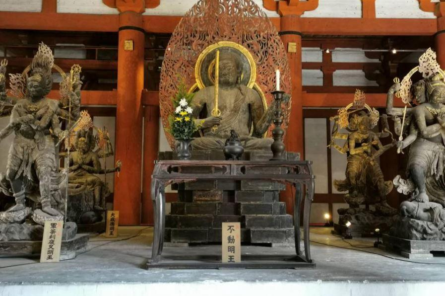
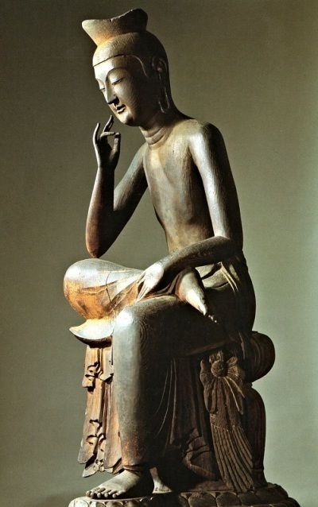
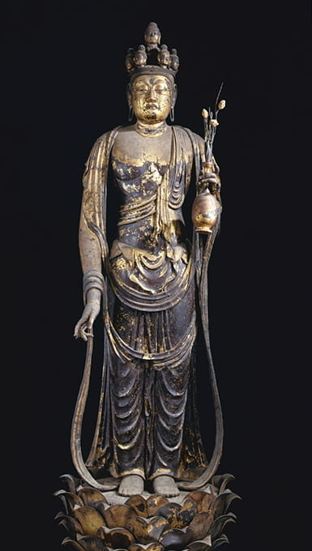
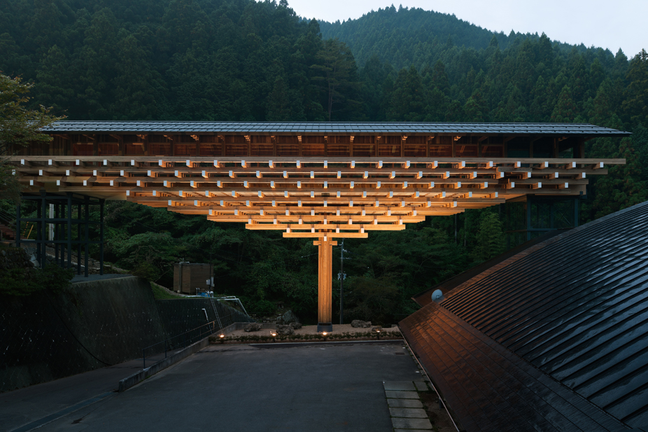
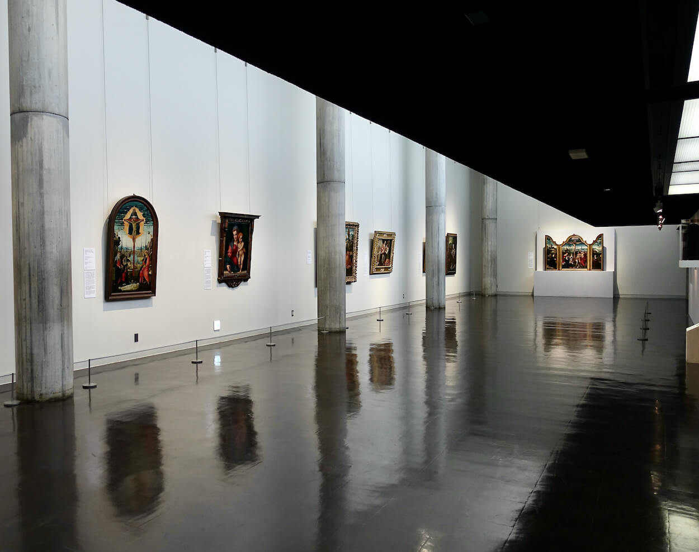
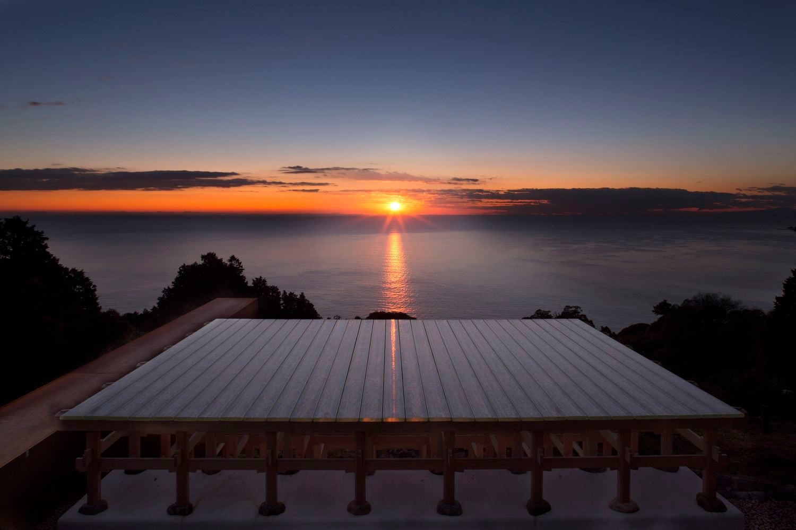
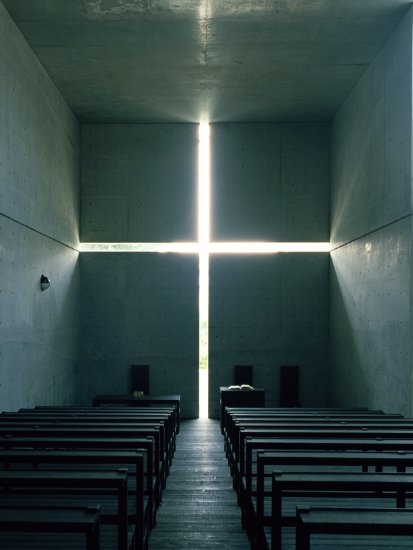

仏像写真アーカイブ
 阿弥陀如来
阿弥陀如来
平等院鳳凰堂の堂内にある阿弥陀如来坐像。穏やかな眼差しと静かな微笑は、救いと慈しみのかたちです。端正な姿は、空間に安心とひかりをもたらします
 不動明王東寺・御影堂の不動明王像。怒りの形相は、迷いを断ち切るための力そのもの。人の本能を見抜き、恐れをもって心を試す。その厳しさの奥には静かな慈悲が宿っています。
 弥勒菩薩中宮寺蔵・弥勒菩薩半跏思惟像。思案する未来仏、弥勒菩薩。遠い時を見つめるような姿勢は、今ここにある苦しみと希望を静かに抱きとめます。柔らかな曲線と落ち着いた佇まいが、空間にやさしい余白をもたらします。
 十一面観音すべてを見通す十一面観音。十一の表情は、多様な苦しみに寄り添い、様々な人の願いに応える存在です柔らかく立つその姿は、空間に深い静けさと気配をもたらします。
現代建築に見る“祈りの空間”
仏像が安置される空間と現代建築に共通するのは、静けさと精神性です。そうした気配は、伝統的な仏堂だけでなく、現代建築にも確かに息づいています。磯崎新が設計した《アートプラザ》は、幾何学的な構成と静謐な空間が印象的で、静けさに身を委ねる空間としての建築を提示します。隈研吾による《梼原 木橋ミュージアム》は、木の温もりと自然との調和が“祈り”の感覚を呼び起こします。ル・コルビュジエの《国立西洋美術館》は、光と空間の構成に精神性を感じさせ、イサム・ノグチの《モエレ沼公園》は、大地そのものを彫刻としたようなスケールで、瞑想的な場を生み出しています。 杉本博司の《江之浦測候所》は、時間と自然、宇宙のスケールといった要素を空間に取り込み、そこでは自然と人、外界と内面の境界があいまいになり、存在そのものに向き合うような場が立ち現れます。安藤忠雄の《光の教会》は、壁に刻まれた十字型のスリットから差し込む光が内部を満たし、言葉にならない思いを静かに受け止めるような、澄んだ気配が漂っています。光と静寂が訪れる者の感覚を深く沈め、思考や感情をそっと見つめ直すような時間を生み出す、建築としての祈りのあり方を提示しています。
磯崎新が設計した《アートプラザ》は、幾何学的な構成と静謐な空間が印象的で、静けさに身を委ねる空間としての建築を提示します。
 梼原 木橋ミュージアム（隈研吾）隈研吾による《梼原 木橋ミュージアム》は、木の温もりと自然との調和が“祈り”の感覚を呼び起こします。
 国立西洋美術館（ル・コルビュジエ）ル・コルビュジエの《国立西洋美術館》は、光と空間の構成に精神性を感じさせます。
.avif) モエレ沼公園（イサム・ノグチ）
モエレ沼公園（イサム・ノグチ）
イサム・ノグチの《モエレ沼公園》は、大地そのものを彫刻としたようなスケールで、瞑想的な場を生み出しています。
 江之浦測候所 (杉本博司)杉本博司の《江之浦測候所》は、時間と自然、宇宙のスケールといった要素を空間に取り込み、存在そのものに向き合うような場が立ち現れます。
 光の教会 (安藤忠雄)安藤忠雄の《光の教会》は、壁に刻まれた十字型のスリットから差し込む光が内部を満たし、言葉にならない思いを静かに受け止めるような、澄んだ気配が漂っています。
静けさを感じる場所
時を超えて、私たちの心に深く響く「静けさ」。それは、古代の仏像が放つ穏やかな佇まいの中にも、現代建築が織りなす光と影の空間の中にも存在します。仏像が何世紀もの間、人々の祈りを受け止めてきたように、建築もまた、人々の感情や思考を包み込む「器」としての役割を果たしています。 これらの造形は、単なる形や構造を超え、視覚だけでなく、心に語りかける力を持ちます。仏像の繊細な表情や衣のひだ、あるいは建築のミニマルなラインや素材の質感は、私たちに日常の喧騒から離れた、静かで豊かな時間を与えてくれます。 この展覧会を通して、皆さんがそれぞれの「静けさ」を見つけ、日々の生活に新たなインスピレーションが生まれることを願っています。